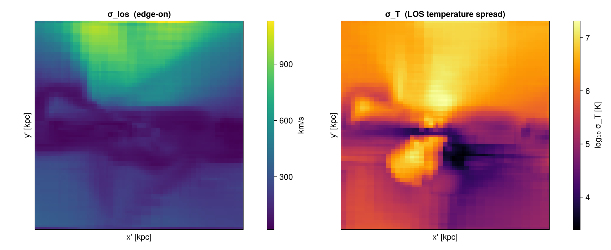
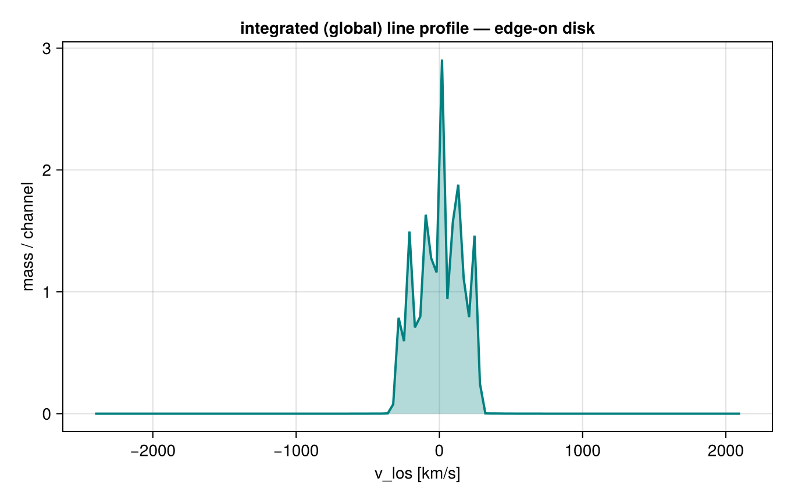
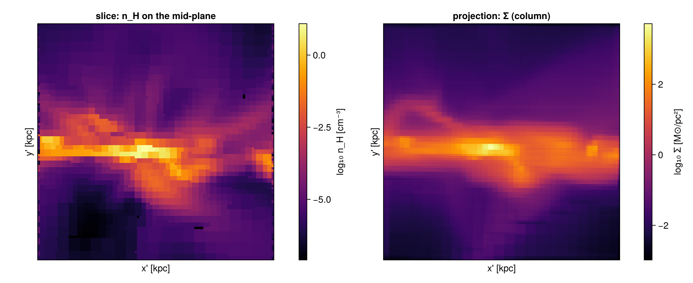
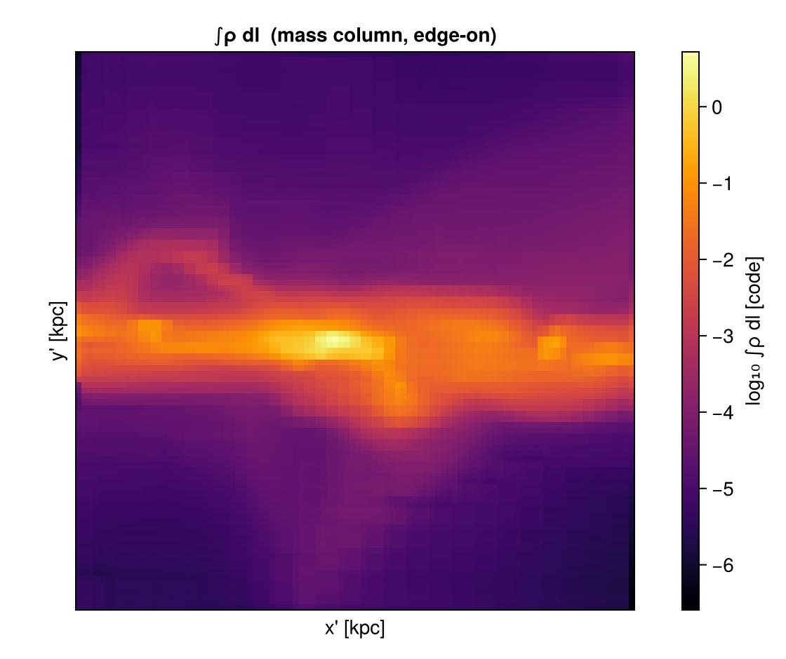
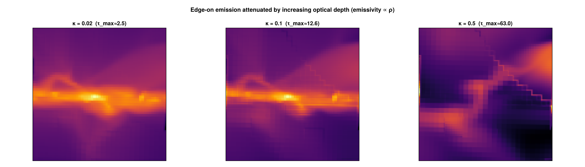
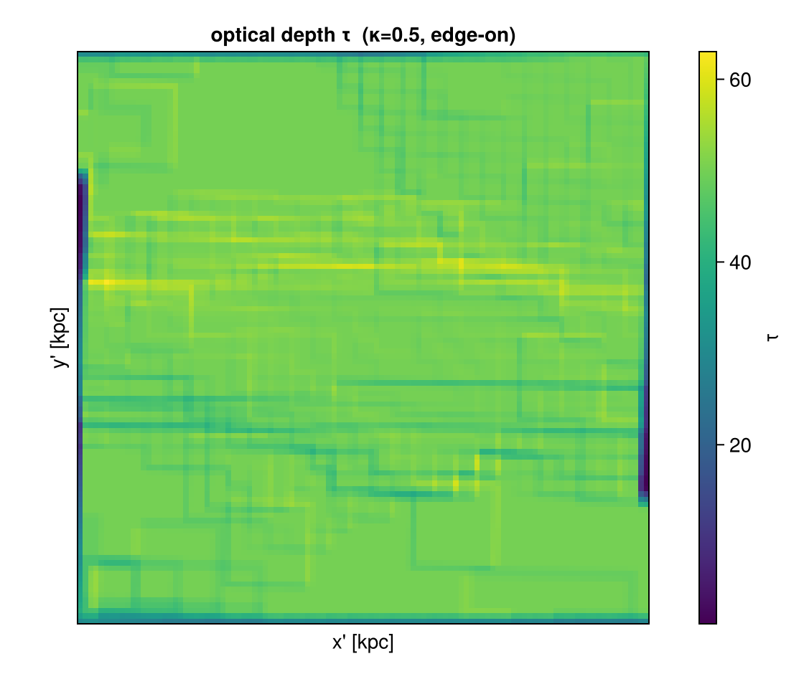
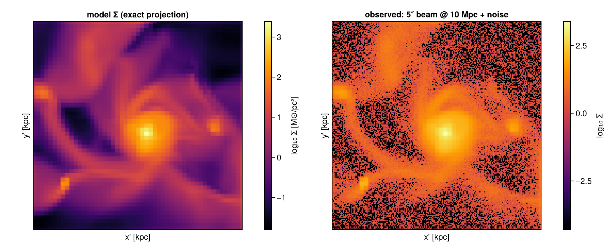

Off-axis: advanced LOS features & mock observations
This tutorial is also an executable Jupyter notebook — open / download 14_multi_OffAxis_Features.ipynb. The notebooks run end-to-end and double as part of Mera's test suite.
This tutorial walks through the line-of-sight analysis tools built on top of Mera's off-axis projection — velocity/field dispersion (moment2), the integrated spectrum, off-axis slices, the column integral, emission + absorption (emission_map), a telescope beam in angular units, and FITS export with a sky WCS.
Run the cells top to bottom and change the numbers. We use one galaxy throughout (spiral_clumps) and set pixel sizes physically with pxsize=[size, :unit].
Prerequisite: the off-axis projection tutorial.
# --- environment ---------------------------------------------------------
using Pkg
Pkg.activate(expanduser("~/Documents/codes/github/Mera.jl")) # adjust to your Mera.jl checkout
using Mera, CairoMakie
CairoMakie.activate!()
println("threads = ", Threads.nthreads()) Activating
threads = 4
project at `~/Documents/codes/github/Mera.jl`BASE = "/Volumes/FASTStorage/Simulations/Mera-Tests" # <-- change me
gas = gethydro(getinfo(100, joinpath(BASE, "spiral_clumps"), verbose=false), verbose=false, show_progress=false); 0.739124 seconds (3.91 M allocations: 303.285 MiB, 1.39% gc time, 100.09% compilation time)A small helper to show a 2D map with physical axes (reused below):
function showmap!(fig, pos, M, ext_kpc; title="", clabel="", cmap=:inferno, logscale=true, crange=nothing, divergent=false)
A = logscale ? log10.(map(v -> v > 0 ? v : NaN, M)) : Float64.(M)
ax = Axis(fig[pos...], aspect=DataAspect(), title=title, xlabel="x' [kpc]", ylabel="y' [kpc]")
xs = range(ext_kpc[1], ext_kpc[2], length=size(A,1)); ys = range(ext_kpc[3], ext_kpc[4], length=size(A,2))
hm = crange===nothing ? heatmap!(ax, xs, ys, A, colormap=cmap, nan_color=:black) :
heatmap!(ax, xs, ys, A, colormap=cmap, nan_color=:black, colorrange=crange)
Colorbar(fig[pos[1], pos[2]+1], hm, label=clabel); hidedecorations!(ax, label=false)
return ax
end;1. Dispersion of any field — moment2
moment2(obj, q) is the weight-weighted line-of-sight standard deviation σ = √(⟨q²⟩−⟨q⟩²) of a field q. For q=:vlos it is the velocity dispersion σlos; but it works for any field — here the temperature dispersion along each edge-on sightline, next to the mean v_los.
win = (direction=:edgeon, center=[:bc], xrange=[-16,16], yrange=[-16,16], range_unit=:kpc, pxsize=[0.4,:kpc])
sv = moment2(gas, :vlos, :km_s; win..., verbose=false) # σ_los (velocity dispersion)
sT = moment2(gas, :T, :K; win..., verbose=false) # σ_T (temperature dispersion)
e = [sv.x[1], sv.x[end], sv.y[1], sv.y[end]] .* gas.scale.kpc # moment2/los_component give x,y edges
fig = Figure(size=(1050,430))
showmap!(fig, (1,1), sv.map, e; title="σ_los (edge-on)", clabel="km/s", logscale=false, cmap=:viridis)
showmap!(fig, (1,3), sT.map, e; title="σ_T (LOS temperature spread)", clabel="log₁₀ σ_T [K]")
fig
2. The global spectrum — integrated_spectrum
A velocity cube holds a spectrum per pixel; summing them over the map gives the integrated (global) line profile — the single-dish HI/CO-style profile. (Summing the profile over the channels returns the enclosed mass.)
vc = velocity_cube(gas; direction=:edgeon, center=[:bc], xrange=[-18,18], yrange=[-18,18],
range_unit=:kpc, pxsize=[0.4,:kpc], nv=120, verbose=false)
v, I = integrated_spectrum(vc)
println("∫ spectrum dv = ", round(sum(I), sigdigits=4), " (code mass) = enclosed mass")
fig = Figure(size=(680,430)); ax = Axis(fig[1,1], xlabel="v_los [km/s]", ylabel="mass / channel",
title="integrated (global) line profile — edge-on disk")
band!(ax, v, zero(I), I, color=(:teal,0.3)); lines!(ax, v, I, color=:teal, linewidth=2)
fig∫ spectrum dv = 19.45
(code mass) = enclosed mass
3. Off-axis slice (cutting plane) — offaxis_slice
offaxis_slice gives the field on the camera plane through the centre — a cut, not an integral. Compare the mid-plane density (slice) with the surface density (projection) of the same edge-on view. A slice is a nearest-cell sample (resolution-dependent), so use a projection when you need a conserved quantity.
sl = offaxis_slice(gas, :rho, :nH; direction=:edgeon, center=[:bc], xrange=[-16,16], yrange=[-16,16],
range_unit=:kpc, pxsize=[0.3,:kpc], verbose=false)
pj = projection(gas, :sd, :Msol_pc2; direction=:edgeon, center=[:bc], xrange=[-16,16], yrange=[-16,16],
range_unit=:kpc, pxsize=[0.3,:kpc], binning=:exact, verbose=false, show_progress=false)
fig = Figure(size=(1050,430)); es = sl.extent .* gas.scale.kpc; ep = pj.extent .* gas.scale.kpc
showmap!(fig, (1,1), sl.map, es; title="slice: n_H on the mid-plane", clabel="log₁₀ n_H [cm⁻³]")
showmap!(fig, (1,3), pj.maps[:sd], ep; title="projection: Σ (column)", clabel="log₁₀ Σ [M⊙/pc²]")
fig
4. Column integral — column_integral
column_integral is the path-length-weighted line integral ∫ q dl (the geometric basis of a column-density / optical-depth map): q=:rho gives the mass column (the same physical quantity as :sd), and τ = κ·∫ρ dl for a grey opacity. With binning=:exact the chord length through each cube is integrated per pixel analytically.
N = column_integral(gas, :rho; direction=:edgeon, center=[:bc], xrange=[-18,18], yrange=[-18,18],
range_unit=:kpc, pxsize=[0.4,:kpc], binning=:exact)
fig = Figure(size=(560,470)); e = N.extent .* gas.scale.kpc
showmap!(fig, (1,1), N.map, e; title="∫ρ dl (mass column, edge-on)", clabel="log₁₀ ∫ρ dl [code]")
fig[Mera]: 2026-06-06T10:10:44.143
center: [0.5, 0.5, 0.5] ==> [50.0 [kpc] :: 50.0 [kpc] :: 50.0 [kpc]]
domain:
xmin::xmax: 0.32 :: 0.68 ==> 32.0 [kpc] :: 68.0 [kpc]
ymin::ymax: 0.32 :: 0.68 ==> 32.0 [kpc] :: 68.0 [kpc]
zmin::zmax: 0.0 :: 1.0 ==> 0.0 [kpc] :: 100.0 [kpc]
Selected var(s)=(:rho,)
Weighting = :volume
Off-axis LOS =
[0.9999, 0.0003, -0.0143] (binning=:exact)
Effective resolution: 251^2 → map size: 98 x 98
5. Emission + absorption — emission_map
emission_map solves the front-to-back radiative-transfer equation I = Σ S·(1−e^{−Δτ})·e^{−τ_front} along each sightline, with Δτ = κ·ℓ and the exact box-spline chord length ℓ. The emissivity is the source function times the opacity, so at small κ the result is the optically-thin limit I ≈ S·κL, and as κ grows the far side of the disk is absorbed and the near side dominates (a uniform slab of depth L gives exactly I = S(1−e^{−κL})). Here the source function is the density (source=:rho).
win5 = (direction=:edgeon, center=[:bc], xrange=[-20,20], yrange=[-20,20], range_unit=:kpc, pxsize=[0.4,:kpc])
fig = Figure(size=(1500,430))
for (k,κ) in enumerate((0.02, 0.1, 0.5))
em = emission_map(gas; kappa=κ, source=:rho, win5..., verbose=false)
A = log10.(replace(em.map, 0.0=>NaN)); ee = em.extent .* gas.scale.kpc
ax = Axis(fig[1,k], aspect=DataAspect(), title="κ = $(κ) (τ_max≈$(round(maximum(em.tau),digits=1)))")
heatmap!(ax, range(ee[1],ee[2],length=size(A,1)), range(ee[3],ee[4],length=size(A,2)), A, colormap=:inferno, nan_color=:black)
hidedecorations!(ax)
end
Label(fig[0,:], "Edge-on emission attenuated by increasing optical depth (emissivity ∝ ρ)", fontsize=15, font=:bold)
fig
The optical-depth map em.tau (the e^{−τ} that attenuates emission from behind) for the most opaque case — this is the quantity that makes the far side fade:
em = emission_map(gas; kappa=0.5, source=:rho, win5..., verbose=false)
fig = Figure(size=(560,470)); e = em.extent .* gas.scale.kpc
showmap!(fig, (1,1), em.tau, e; title="optical depth τ (κ=0.5, edge-on)", clabel="τ", logscale=false, cmap=:viridis)
fig
6. A telescope beam in angular units — mock_observe
mock_observe convolves a map with a Gaussian beam. Beyond a physical beam (:kpc), it accepts an angular beam (:arcsec) together with a source distance — the beam is θ × distance physical (small-angle). Here a face-on disk observed with a 5″ beam at 10 Mpc (distance=1e4, distance_unit=:kpc).
m = projection(gas, :sd, :Msol_pc2; direction=:faceon, center=[:bc], xrange=[-18,18], yrange=[-18,18],
range_unit=:kpc, pxsize=[0.2,:kpc], binning=:exact, verbose=false, show_progress=false)
obs = mock_observe(m, :sd; beam_fwhm=5.0, beam_unit=:arcsec, distance=1.0e4, distance_unit=:kpc, noise=2.0)
fig = Figure(size=(1050,430)); e = m.extent .* gas.scale.kpc
showmap!(fig, (1,1), m.maps[:sd], e; title="model Σ (exact projection)", clabel="log₁₀ Σ [M⊙/pc²]")
showmap!(fig, (1,3), obs, e; title="observed: 5″ beam @ 10 Mpc + noise", clabel="log₁₀ Σ")
fig
7. FITS export with a sky WCS — savefits
Maps and cubes export to FITS for DS9/CASA/CARTA/astropy. savefits is a package extension — load FITSIO to enable it. With wcs=:sky and a distance it writes a celestial WCS (RA---TAN/DEC--TAN) and, for cubes, a proper spectral axis (VRAD):
using FITSIO # activates the FITS extension
# a map with a celestial WCS (5″/pix scale derives from pxsize and the distance)
savefits(m, :sd, "disk_sd"; wcs=:sky, distance=1.0e4, distance_unit=:kpc, sky_center=(150.0, 2.0))
# a velocity cube with celestial + spectral (VRAD) WCS — opens in CASA/CARTA/spectral-cube
savefits(vc, "disk_cube"; wcs=:sky, distance=1.0e4, distance_unit=:kpc)For dependency-free storage use savecube/loadcube (JLD2). The default wcs=:linear writes a camera-plane WCS in code units (no distance needed).
Takeaway
moment2— LOS dispersion of any field;integrated_spectrum— the global line profile of a cube;offaxis_slice— the field on a cutting plane (vs the conserved projection);column_integral— the line integral∫ q dl(mass column / optical-depth basis);emission_map— emission with absorption (e^{−τ}) using the exact chord length;mock_observe— physical or angular beam (with a distance) + noise;savefits(…; wcs=:sky)— celestial + spectral WCS, ready for CASA/CARTA/DS9.
All build on the conservative off-axis core; everything here is regression-tested (test/36_offaxis_features_tests.jl).